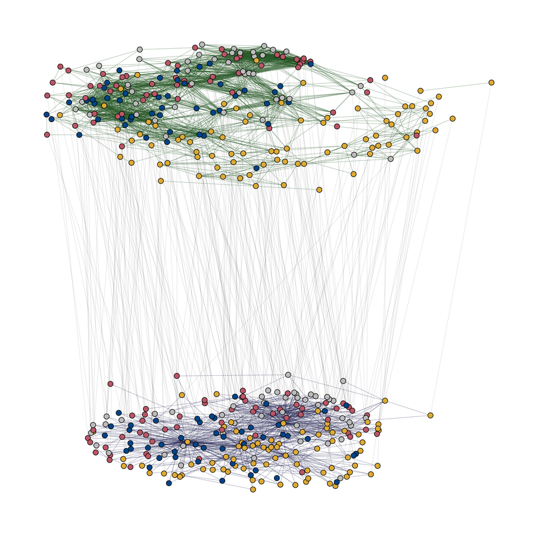

Ueli Reber
Environmental Policy
Political Communication
Text as Data
About | Research | Publications | Teaching | Contact
About
I am a postdoctoral researcher at the Swiss Federal Institute of Aquatic Science and Technology (Eawag) in Zürich, where I am a member of the Policy Analysis and Environmental Governance group (PEGO). Befor I joined PEGO, I was a postdoctoral researcher at the Swiss Federal Institute for Forest, Snow and Landscape Research (WSL) and earned my doctorate in social sciences at the University of Bern. I also hold a master’s degree in geography from the University of Bern.
My research interests include environmental policy, political communication, transnationalization, and computational methods for content and network analysis. Most of the evidence I produce is based on the analysis of texts.
Research
My current work in the Transformation in Pesticide Governance project (TRAPEGO) focuses on the role of evidence in pesticide governance. Using quantitative text analysis, I study the diffusion of evidence from the scientific arena into politics, media, and agricultural practice.
In the context of the Blue Green Biodiversity Research Initiative (BGB), I evaluate the performance of Swiss biodiversity policy over the last two decades. The focus is on the integration of biodiversity into different policy sectors and stages of the policy process. This also involves the question of which actors are driving biodiversity integration.

The transnational climate change debate online: Nodes represent actors, ties represent hyperlinks in the bottom network and common topics in the top network, colors represent the actors' countries (Reber & Häussler, work in progress).
In my dissertation World Wide Web? A closer look at the transnational online public discourse on climate change, I examined whether the climate change issue produces transnationalized publics in different countries and searched for factors that can explain the patterns found. The project aimed to improve the understanding of how political discourses work in the digital society and to provide answers to current methodological challenges when it comes to the analysis of online discourses. The dissertation was part of the project Political agenda-building under the conditions of a hybrid media system – a comparison across countries and issues.
I am member of the Swiss Political Science Association (SPSA) and the Swiss Association of Communication and Media Research (SACM).
Publications
Reber, U., Fischer, M., Ingold, K., Kienast, F., Hersperger, A. M., Grütter, R., & Benz, R. (2022). Integrating biodiversity: A longitudinal and cross-sectoral analysis of Swiss politics. Policy Sciences. doi: 10.1007/s11077-022-09456-4
[Open access, full replication data/code on EnviDat]
Reber, U. (2021). Global climate change or national climate changes? An analysis of the performance of online issue publics in integrating global issues. Environmental Communication, 15(2), 173-188. doi: 10.1080/17524032.2020.1812685
[Manuscript on BORIS open repository]
Adam, S.*, Reber, U.*, Häussler, T.*, & Schmid-Petri, H. (2020). How climate change skeptics (try to) spread their ideas: Using computational methods to assess the resonance among skeptics’ and legacy media. PLoS ONE, 15(10), 1-23. doi: 10.1371/journal.pone.0240089
[Open access, R code on GitHub, *equal contribution]
Schmid-Petri, H., Reber, U., Arlt, D., Elgesem, D., Adam, S., & Häussler, T. (2020). A dynamic perspective on publics and counterpublics: The role of the blogosphere in pushing the issue of climate change during the 2016 US presidential campaign. Environmental Communication, 14(3), 378-390. doi: 10.1080/17524032.2019.1677738
[Manuscript on BORIS open repository]
Adam, S., Häussler, T., Schmid-Petri, H., & Reber, U. (2019). Coalitions and counter-coalitions in online contestation: An analysis of the German and British climate change debate. New Media & Society, 21(11-12), 2671-2690. doi: 10.1177/1461444819855966
[Manuscript on BORIS open repository]
Reber, U. (2019). Overcoming language barriers: Assessing the potential of machine translation and topic modeling for the comparative analysis of multilingual text corpora. Communication Methods and Measures, 13(2), 102-125. doi: 10.1080/19312458.2018.1555798
[Manuscript on BORIS open repository, R code on GitHub]
Schmid-Petri, H., Adam, S., Reber, U., Häussler, T., Maier, D., Miltner, P., Pfetsch, B., & Waldherr, A. (2018). Homophily and prestige: An assessment of their relative strenght to explain link formation in the online climate change debate. Social Networks, 55, 47-54. doi: 10.1016/j.socnet.2018.05.001
[Manuscript on BORIS open repository]
Maier, D., Waldherr, A., Miltner, P., Wiedemann, G., Niekler, A., Keinert, A., Pfetsch, B., Heyer, G., Reber, U., Häussler, T., Schmid-Petri, H., & Adam, S. (2018). Applying LDA topic modeling in communication research: Toward a valid and reliable methodology. Communication Methods and Measures, 12(2-3), 93-118. doi: 10.1080/19312458.2018.1430754
[Manuscript on BORIS open repository]
Häussler, T., Adam, S., Schmid-Petri, H., & Reber, U. (2017). How political conflict shapes online spaces. A comparison of climate change hyperlink networks in the U.S. and Germany. International Journal of Communication 11, 3096–3117. https://ijoc.org/index.php/ijoc/article/view/5644
[Open access]
Häussler, T., Schmid-Petri, H., Adam, S., Reber, U., & Arlt, D. (2016). The climate of debate: How institutional factors shape legislative discourses on climate change. Studies in Communication Sciences 16, 94-102. doi: 10.1016/j.scoms.2016.04.002
[Manuscript on BORIS open repository]
Adam, S., Häussler, T., Schmid-Petri, H., & Reber, U. (2016). Identifying and Analyzing Hyperlink Issue Networks. In G. Vowe & P. Henn (Eds.), Political Communication in the Online World: Theoretical Approaches and Research Designs (pp. 233–247). New York, London: Routledge.
[Book can be found online]
Teaching
I teach courses in the areas of political communication and computational methods. My most recent teaching activities include:
- Introduction to R for social sciences (University of Bern, bachelor tutorial, fall 2020, together with Dr. Aleksandra Urman and Dr. Marlene Kammerer)
- Text as Data: Introduction to Web Scraping and Text Mining mit R (University of Bern, bachelor proseminar, spring 2020)
- Introduction to R for communication research (University of Bern, bachelor tutorial, fall 2019, together with Dr. Thomas Häussler and Aleksandra Urman)
- Introduction to Web scraping and automated content analysis with R (University of Bern, bachelor proseminar, spring 2019)
- Structure and content: Combining social network analysis and topic modeling (University of Bremen, PhD/postdoc workshop, fall 2018)
- Political online communication (University of Bern, bachelor proseminar, fall 2018)
- Introduction to communication and media studies (University of Bern, bachelor tutorial, fall 2018, together with Dr. Franzisca Schmidt)
Contact
online
offline
Eawag: Swiss Federal Institute of Aquatic Science and Technology
Environmental Social Sciences
Überlandstrasse 133
8600 Dübendorf
Switzerland